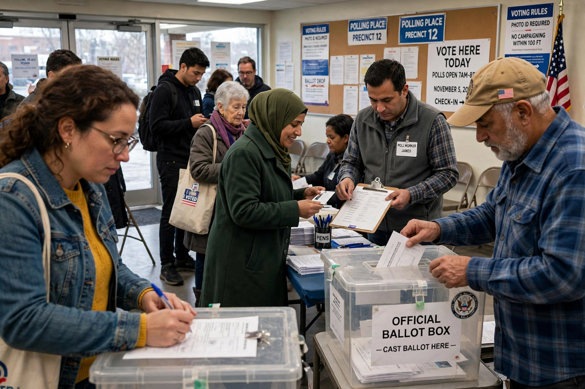

First-generation rights, in the framework proposed by jurist Karel Vasak in the 1970s, are civil and political rights. They deal essentially with liberty and participation in political life, and are often described as "negative" rights because they primarily require the state to refrain from interference.

First-generation rights include freedom of speech, religion, and the press; the right to a fair trial; freedom from torture and arbitrary arrest; and the rights to vote and take part in government. They are enshrined in the International Covenant on Civil and Political Rights (1966) and in instruments such as the United States Bill of Rights and the European Convention on Human Rights. Vasak associated them with the ideals of the French Revolution's liberté.
Second-generation rights are economic, social and cultural rights (égalité), and third-generation rights are collective or solidarity rights (fraternité), such as the rights to development and a healthy environment. Later UN doctrine stresses that all human rights are universal, indivisible, and interdependent, so the generations are a historical lens rather than a hierarchy.